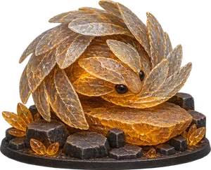

Цветение базальта
Карты и фигурки ведущего
Игровой комплект
3 игрока · 4 игрока · 5 игроков · 6 игроков · 7 игроков · 8 игроков
Карта кампании

Поля боя


Герои


Персонажи ведущего


Противники
 Сланцевый прыгун 3Сланцевый прыгун 1Сланцевый прыгун 4Сланцевый прыгун 6Сланцевый прыгун 2Сланцевый прыгун 5
Сланцевый прыгун 3Сланцевый прыгун 1Сланцевый прыгун 4Сланцевый прыгун 6Сланцевый прыгун 2Сланцевый прыгун 5 Войлочный мотылёк 4Войлочный мотылёк 3Войлочный мотылёк 2Войлочный мотылёк 5Войлочный мотылёк 6Войлочный мотылёк 1
Войлочный мотылёк 4Войлочный мотылёк 3Войлочный мотылёк 2Войлочный мотылёк 5Войлочный мотылёк 6Войлочный мотылёк 1

Слюдяной клубок 4Слюдяной клубок 1Слюдяной клубок 2Слюдяной клубок 6Слюдяной клубок 5Слюдяной клубок 3